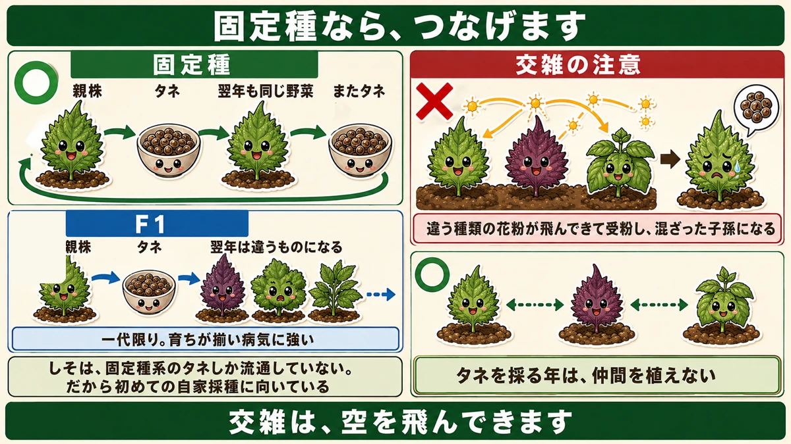
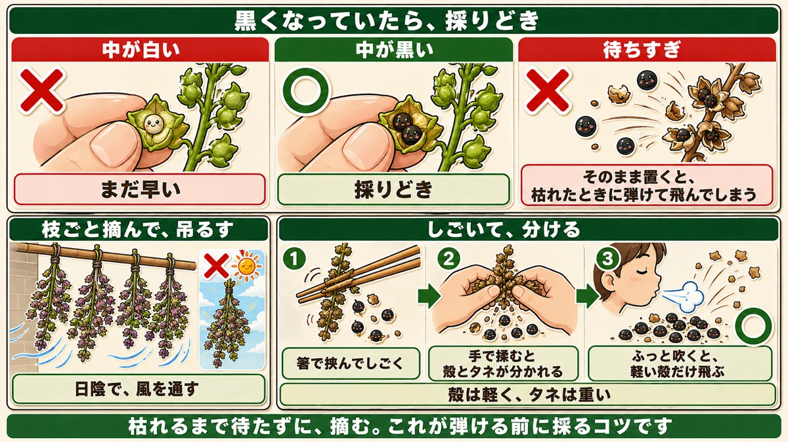
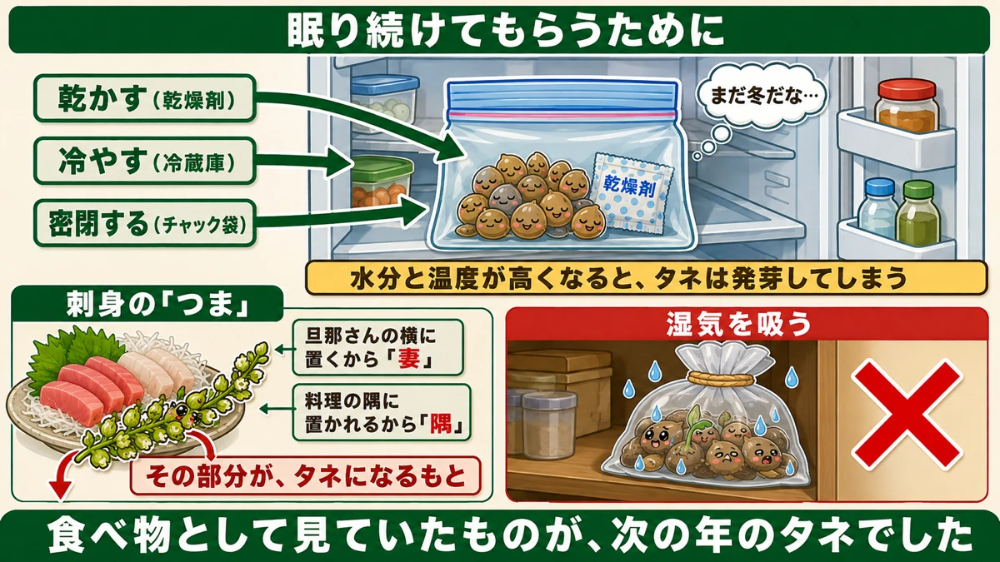

Crush one seed and look inside 🌱 Black means it's time to collect

🌱 "I buy seed every year."
🌱 "I don't know when to collect it."
🌱 "I saved seed and got something odd from it."
Hello, I'm Eiko. Eight years of growing vegetables organically and without pesticides, and a teaching licence in science.
Today: how to stop buying seed.
The headline:
Crush one seed from the spike. If the inside is black, it's ready.
That's the whole judgement.
Open-pollinated varieties carry on

What this diagram says （図解の文字）
- ○ Open-pollinated — parent plant → seed → "the same vegetable next year" → seed again
- ✗ F1 hybrid — parent plant → seed → "next year it's something different"
- "One generation only. Even growth, often good disease resistance"
- "Watch out for crossing"
- Open-pollinated — long-established varieties. You can save your own seed and sow it next year
- F1 hybrid — bred by crossing, good for one generation only. Even growth, often strong disease resistance
Neither is "right" — they're for different purposes. This article is about the seed-saving half.
Shiso is entirely open-pollinated
The easiest crop to start with is shiso (perilla), for a specific reason: only open-pollinated types are sold.
So there's no risk of accidentally buying an F1 — and no chance of the next generation coming out strange. It's the best crop for a first attempt at saving seed.
If you've grown it, you'll recognise this: it comes up on its own the following year, where you grew it before. That's dropped seed germinating by itself. It's a plant with a strong habit of continuing through seed.
Watch out for crossing
One caution. Shiso has relatives — green shiso, red shiso, and egoma (also a perilla).
Plant them near each other and pollen from a different type arrives, pollinates, and the offspring are a mixture. That's crossing.
It can look like green shiso and taste closer to egoma.
A real example I read: someone thought "this tastes more like egoma than shiso" — and had forgotten they'd planted egoma nearby. Interesting, but if it wasn't deliberate it's just a failure.
The fix is distance
If you're saving seed, plant relatives well apart.
Elsewhere I've written that onions and legumes are too close even in the next bed. That was underground; crossing arrives through the air, so the distance needs to be greater.
If you've decided to save green shiso seed, don't grow red shiso or egoma that year at all. That's the sure way.
Knowing when to collect

What this diagram says （図解の文字）
- Black inside means it's time
- ✗ "white inside — too early" ／ ○ "black inside — ready"
- ✗ "waited too long" — "left in place, it shoots the seed away when it dries"
- "Cut the whole stem and hang it" — ✗ "in shade…"
Don't wait too long
Most people think: "wait until it flowers and dries out." That's too late.
Because left in place, the seed is flung out when the plant dries. Correct behaviour for a plant — it's throwing its seed as far as it can — and inconvenient for you. By the time you notice, it's on the ground.
Crush one
After flowering, small beads form along the spike. Crush one between your fingers.
- White inside → too early
- Black inside → ready
That's it. No difficult judgement.
When it's black, cut the whole stem — don't wait for it to dry on the plant. That's how you collect before it shatters.
Two ways to collect
Method 1: hang it and let it finish
After cutting, hang it somewhere shaded and airy to finish ripening.
- The seed portion dries
- And the seed continues ripening after cutting
Squash cures after picking; seed does the same — it finishes off the plant.
Don't dry it in the sun. Shade, with air moving — as with storing potatoes and onions.
Method 2: strip it once it's crisp
When the spike is dry and brown:
- Pinch it with chopsticks and strip it off
- Rub it between your hands and the husks separate from the seed
Separating husk from seed
A: sieve it. A fine sieve drops the husks out.
B: blow it. Easier. Husks are light and seed is heavy, so a puff of breath carries the husks away and leaves the seed behind. An old method that needs no equipment.
Storing it

What this diagram says （図解の文字）
- So that it stays asleep
- "Dry it (desiccant)" ／ "chill it (fridge)" ／ "seal it (zip bag)"
- "Still winter, then…"
- "Raise the moisture and temperature and the seed germinates"
- Into a zip-seal bag
- With a desiccant sachet
- In the fridge
Why those three
Raise the moisture and the temperature and seed germinates.
Seed is asleep, and what wakes it is water and warmth. So: dry it, chill it, seal it. Three ways of letting it go on sleeping.
Dark, dry and cold tells a seed that winter is still going. Seed you saved yourself is treated exactly the same.
Done this way it keeps perfectly until next year — collect each year, sow each year, and it cycles.
What it means to stop buying
The benefit isn't only the money. Each year you sow seed collected from your own plot — seed from plants that grew in your conditions.
Over the years, the seed is said to become better suited to that particular ground.
You don't have to do it with everything. Shiso is sold only as open-pollinated types, so it can't go wrong; you only have to watch the crossing. Start with one crop.
To sum up
- ✅ Open-pollinated seed can be saved and sown again
- ✅ Shiso is sold only as open-pollinated — ideal for a first attempt
- ✅ Volunteers are dropped seed germinating
- ✅ Watch for crossing — green shiso, red shiso and egoma are relatives
- ✅ Crossing travels through the air, so keep them far apart — or don't grow the others that year
- ✅ Waiting for it to dry means the seed shatters and is lost
- ✅ Crush one bead: white too early, black ready
- ✅ Cut the whole stem and hang it in the shade — never in the sun
- ✅ Once crisp, strip and rub; blow the husks away
- ✅ Zip bag + desiccant + fridge
- ✅ Dry, cold and sealed keeps the seed asleep
- ✅ Saved seed gradually suits your own ground
You don't have to do all of it. Go and crush one bead from a shiso spike. If it's black, this year's seed is already there for the taking 🌱
Thank you for reading!